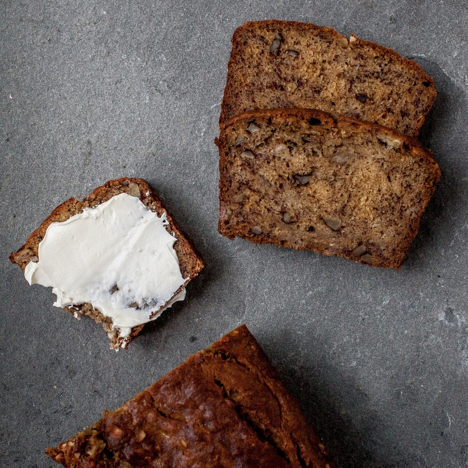

Banana Bread

Description
Bread of banana
Ingredients
- 1 1/2 cups all-purpose flour
- 1/4 teaspoons baking soda
- 3/4 teaspoon kosher salt
- 1 cup (1/2 stick) unsalted butter, room temperature
- 1 cup (packed) dark brown sugar
- cup mascarpone, plain whole-milk Greek yogurt, or sour cream
- 2 large eggs
- 4 large very ripe bananas, mashed (about 1 1/2 cups)
- 1/2 cup chopped bittersweet or semi sweet chocolate (optional)
- 1/2 cup chopped walnuts (optional)
Steps
- Preheat oven to 350°. Lightly coat 8½x4½" loaf pan with nonstick spray and line with parchment paper, leaving a generous overhang on long sides. Whisk flour, baking soda, and salt in a medium bowl.
- Using an electric mixer on medium-high speed, beat brown sugar, mascarpone, and butter in a large bowl until light and fluffy, about 4 minutes. Add eggs one at a time, beating to blend after each addition and scraping down sides and bottom of bowl as needed.
- Reduce speed to low, add flour mixture, and mix until just combined. Add bananas and mix just until combined. Fold in chocolate and/or walnuts, if using. Scrape batter into prepared pan; smooth top.
- Bake bread until a tester inserted into the center comes out clean, 60–65 minutes. Transfer pan to a wire rack and let bread cool in pan 1 hour. Turn out bread and let cool completely (if you can resist) before slicing.